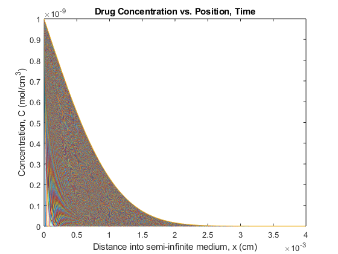
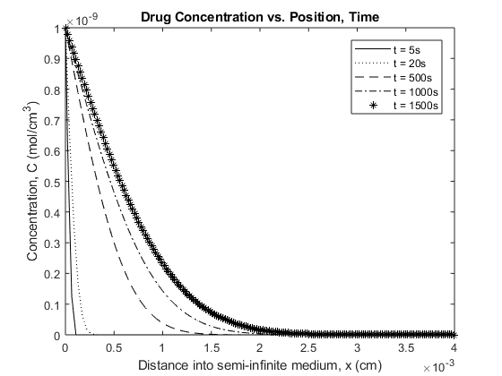
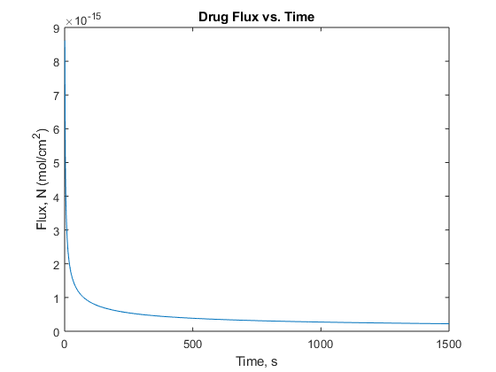

Contents
%BME 307, HW7, P2, Part E %Mackenzie Marques %03/27/2018 clear all close all
Euler numerical methods - plot drug concentration
D = 2.33e-10; % diffusion coefficient calculated from Part c; units: cm^2/s x0 = 0; %initial position, x=0, units: cm xEnd = 0.004; %final position, x=L, units: cm t0 = 0; %initial time, t=0, units: s tEnd = 25*60; %final time, t=1500, units: s dt = 1; %time step size, units: s dx = (2.*D.*dt).^(0.5); %position step size, units: cm t = t0:dt:tEnd; %time vector x = x0:dx:xEnd; %position vector M = floor((tEnd-t0)./dt); %time nodes N = floor((xEnd-x0)./dx); %position nodes C = zeros(N+1,M+1); %pre-allocated concentration matrix C(1,:) = 1e-9; %1st boundary condition: x=0,t>=0,C=1e-9 %2nd boundary condition: x>>0,t>=0,C=0 %initial condition: x>0,t=0,C=0 %2nd boundary condition and initial condition already accounted for in %matrix of zeros for j = 1:M %iterate through time nodes (columns) for i = 2:N %iterate through position nodes (rows) C(i,j+1) = C(i,j) + ((D.*dt)./(dx.^2)).*(C(i+1,j)-2.*C(i,j)+C(i-1,j)); %numerical approximation of concentration from Fick's 2nd Law end end %alternative approach to organizing position %position = zeros(N+1,M+1); %for i = 1:N+1 %for j = 1:M+1 %position(i,j) = (i-1)*dx; %end %end figure(1) %plot of concentration vs. position %each line represents a time plot(x, C) title('Drug Concentration vs. Position, Time'); xlabel('Distance into semi-infinite medium, x (cm)'); ylabel('Concentration, C (mol/cm^{3})'); figure(2) plot(x, C(:,5), 'k', x, C(:,20), 'k:', x, C(:, 500), 'k--', x, C(:,1000), 'k-.', x, C(:,1500), 'k*'); legend('t = 5s', 't = 20s', 't = 500s', 't = 1000s', 't = 1500s'); title('Drug Concentration vs. Position, Time'); xlabel('Distance into semi-infinite medium, x (cm)'); ylabel('Concentration, C (mol/cm^{3})'); 
Plot of drug flux in tissue over time
C1 = 1e-9; %drug concentration within lumen; units: mol/cm^3 C0 = 0; %drug concentration at end of semi-infinite medium; units: mol/cm^3 Nx = sqrt(D./(pi.*t)).*(C1-C0); %drug flux into tissue over time figure(3) plot(t , Nx); %plot of flux vs. time title('Drug Flux vs. Time'); xlabel('Time, s'); ylabel('Flux, N (mol/cm^{2})');